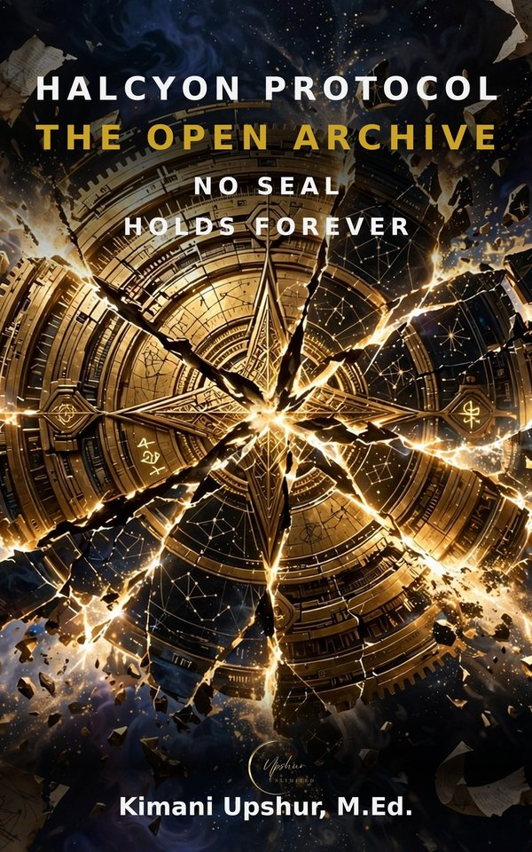

Next Book in the Series
You are reading Halcyon Protocol · Book 4 of 6. Continue with Book 5:

Readers Also Browse
More Fiction titles.

You are reading Halcyon Protocol · Book 4 of 6. Continue with Book 5:
More Fiction titles.
A fresh Bible verse, reflection, and prayer in your inbox every morning.